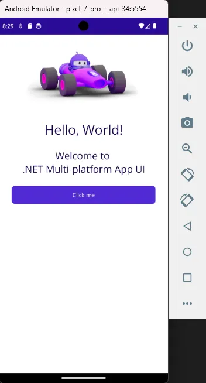
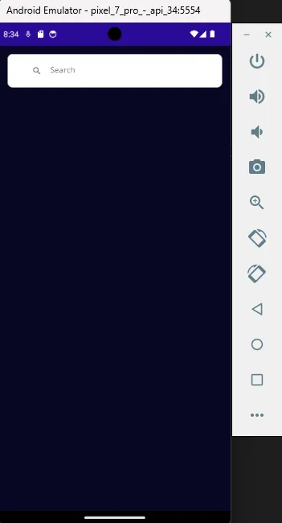
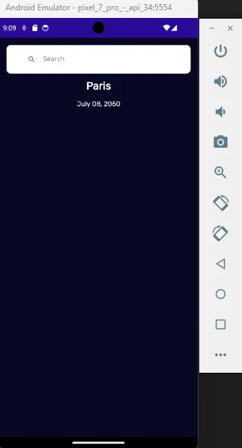
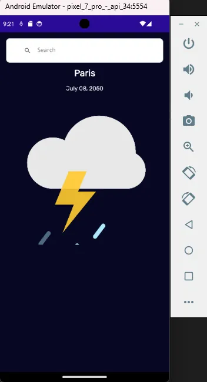
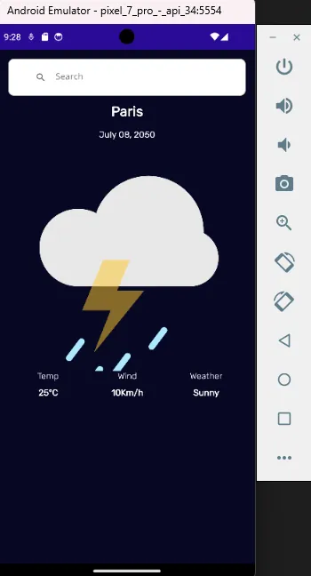
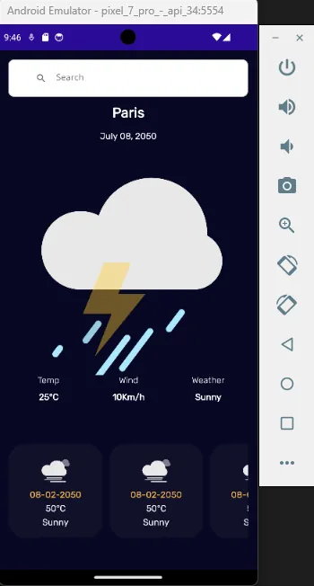
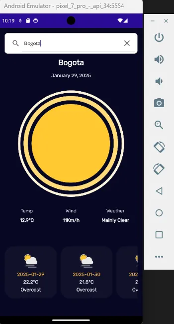
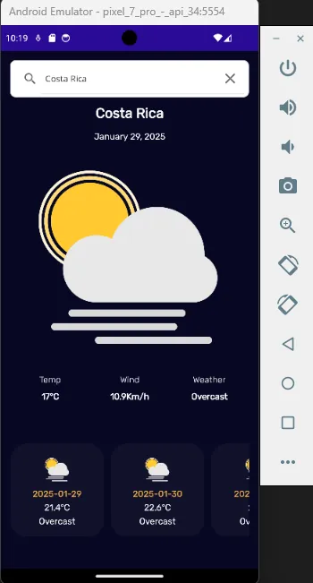

ProjectProyecto
The goal of this project is to build an app that checks the weather anywhere using the Weather API. It explores connecting to an external web service, implementing styles and resource dictionaries to customize the interface, adding custom fonts and using Lottie files for animations. It also integrates the SkiaSharp.Extended.UI.Maui NuGet package and applies Handlers to configure and extend controls, all to create a polished, complete interface in the app.
El objetivo de este proyecto es crear una app para poder consultar el clima de cualquier lugar a través de la API Weather API. En esta sección se explora la conexión con un servicio web externo, la implementación de estilos y diccionarios de datos para personalizar la interfaz, la incorporación de fuentes personalizadas y el uso de archivos Lottie para animaciones. Además, se integra el paquete NuGet SkiaSharp.Extended.UI.Maui y se aplican Handlers para configurar y extender controles, todo esto para poder crear una interfaz bien agradable y completa en la app.
Project LinksEnlaces del Proyecto
ChallengesRetos
Creating stylesCreación de estilos
The goal was to unify and customize the app's look by creating styles and shared resources.
El objetivo fue unificar y personalizar la apariencia de la aplicación mediante la creación de estilos y recursos compartidos.
Using NuGetUtilizar Nuget
SkiaSharp.Extended.UI.Maui meant learning to work with advanced graphics components and to draw custom elements inside the app.
SkiaSharp.Extended.UI.Maui supuso aprender a trabajar con componentes gráficos avanzados y a dibujar elementos personalizados dentro de la aplicación.
Using ConvertersUso de Converters
Use a converter to interpret the API response and decide which image to show on screen based on the value received.
Lograr usar converter para interpretar la respuesta de la API y así decidir qué imagen mostrar en pantalla según el valor recibido.
Project ScreenshotsCapturas del Proyecto







